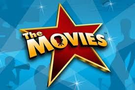
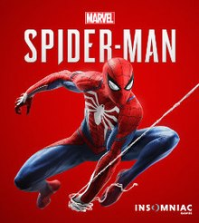
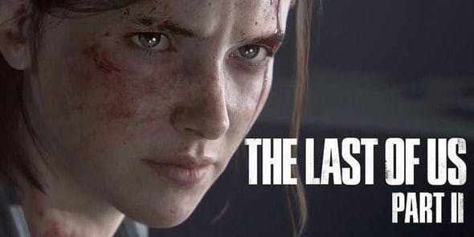
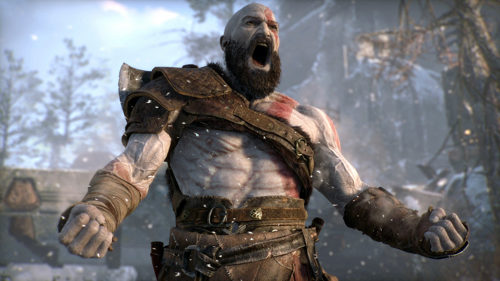

Welcome to my blog
Home
About Me
Things I like
Contact
STUFF
MOVIES

So, recently I saw The Dark Knight Trilogy again.
Still was entertained and awed like it was the first time.
Hands down, THE best superhero movies. If you want to know
more click at these links.
Batman Begins(2005)
The Dark Knight(2008)
The Dark Knight Rises(2012)
Before that I watched Taxi Driver(1976). It was a really cool
movie. A psychological thriller I think. If you want check it
out here.
Taxi Driver(1976)
Now I plan to watch The Godfather movies. Will update about them once
I see them.
GAMING

I did'nt play any games after coming here as I don't like to play
pc games so. But I saw the gameplay of the new Spiderman game
and I loved it. Yeah, the same guy in the picture. Will play it
the second I reach home.
Also, the trailer of The Last Of Us 2
dropped some time ago. Boy was it amaaazing. Got goosebumps.
The other game I liked this year was God Of War. I mean,damn,
that game was intense. Mixing up Norse with Greek. Very creative.
I also played Uncharted:The Lost Legacy. The only thing I didnt like
was how short it was. Waiting for other awesome games to get released now.
Some more pics. Because why not eh.


READING
Well I haven't been reading much since the last couple of months but
I have been reading the 4th book of A Song Of Ice And Fire series
i.e. A Feast For Crows. Its pretty good. When I start reading it, I sit
for hours but the frequency of that reading session has decreased
significantly as I haven't been able to manage my time properly.
Will try to complete it as soon as possible.